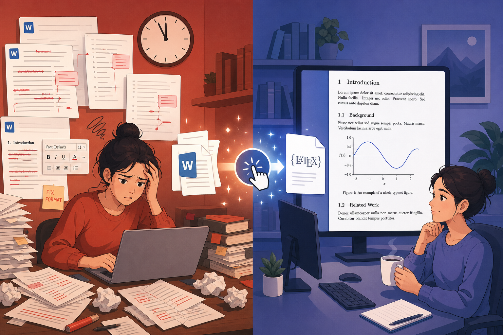
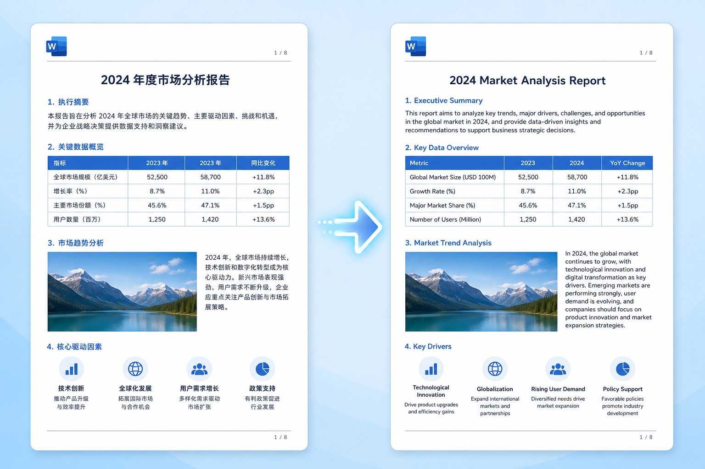
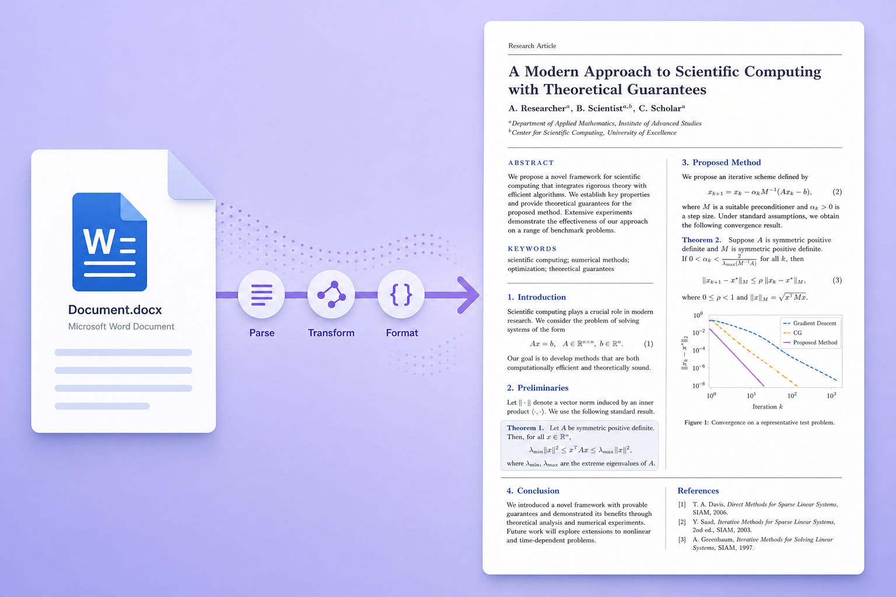

学术论文格式化一站式工具 — 保留格式翻译 + Word 一键转 LaTeX

用翻译软件翻译论文，表格错位、图片丢失、公式变乱码，还得花几小时重新排版。
期刊要求 LaTeX 投稿，手动从 Word 转换要花 1-2 天调格式、改公式、排参考文献。
不熟悉 LaTeX 的同学面对编译报错束手无策，一个反斜杠就能卡半天。

上传 Word 文档，AI 翻译后原样保留所有格式：

上传 .docx 文件，自动生成符合 Elsevier CAS 模板的 LaTeX 源码：
学术论文示例文档
摘要
本文研究了深度学习在计算机视觉领域的应用。我们提出了一种新的卷积神经网络架构，在 ImageNet 数据集上取得了优异的性能。
1. 引言
深度学习（Deep Learning）是机器学习的一个分支，近年来在图像识别、自然语言处理等领域取得了突破性进展。
2. 方法
我们的模型使用以下损失函数：L = ∑(yi - ŷi)² + λ∑wi²
Academic Paper Sample Document
Abstract
This paper investigates the application of deep learning in the field of computer vision. We propose a novel convolutional neural network architecture that achieves excellent performance on the ImageNet dataset.
1. Introduction
Deep Learning is a branch of machine learning that has made breakthroughs in fields such as image recognition and natural language processing.
2. Method
L = ∑(yi - ŷi)² + λ∑wi²
Lightweight Underwater Sonar Object Detection Driven by Multi-Dimensional Representation Reconstruction (LUOD-MDR)
Abstract: Underwater object detection is an important prerequisite for underwater intelligent perception and multi-robot collaborative operations...
Keywords: sonar target detection; Multi-dimensional representation reconstruction; Lightweight; Sonar echo
Introduction
Underwater object detection is the fundamental link of underwater intelligent perception and autonomous operation systems...
使用邀请码注册账号，获得免费试用积分
上传你的 Word 文档（.docx），选择翻译或转换功能
等待几秒，下载格式完美的翻译文档或 LaTeX 源码包
每个邀请码赠送 100 积分（约可翻译 2 篇论文或转换 5 次 LaTeX）
每个邀请码仅限一人使用，先到先得。点击复制邀请码。
前往 easypaper.top 注册使用复制上方邀请码，前往网站注册即可免费使用
https://easypaper.top/